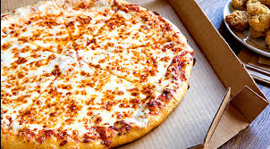

<!DOCTYPE html>
<html lang="en">
    <head>
        <meta charset="UTF-8">
        <meta name="viewport" content="width=device-width, initial-scale=1.0">
        <meta http-equiv="X-UA-Compatible" content="ie=edge">
        <meta name="keywords" content="pizza,cheese,hawaiian,vegetable">
        <meta name="author" content="Archit">
        <title>The diverse types of pizza </title>
	 <style>
		body {
   		 font-family: verdana;
		}
		#mainHeader {
		    background: orange;
		}
		h1 {
		    color: white;
		    text-align: center;
		}
		h2 {
		    text-align: center;
		}

		p {
		    font-family: verdana;
		    font-size: 20px;
		} 
		 #p1 {
		     border: 6px dashed yellow;
		} 
	 <style>	 
    </head>
    <body style="background-color:yellow;">
	<header id ="mainheader">	 
        <h1>The Diverse Types of Pizza</h1> 
        <h2>Over here we can see how peoples opinions vary on pizza.</h2>
	</header>
        <p id ="p1">Pizza is a savory dish of <em>Italian decsent</em> consisting of a usually round, 
	flattened base of wheat-based dough topped with tomatoes, cheese, 
	and often various other <strong>ingredients</strong> which is then baked at a high 
	temperature, traditionally in a wood-fired oven. </p>
        

	<p>
	
		<a href ></a>
	
	</p>

    </body>
</html>
